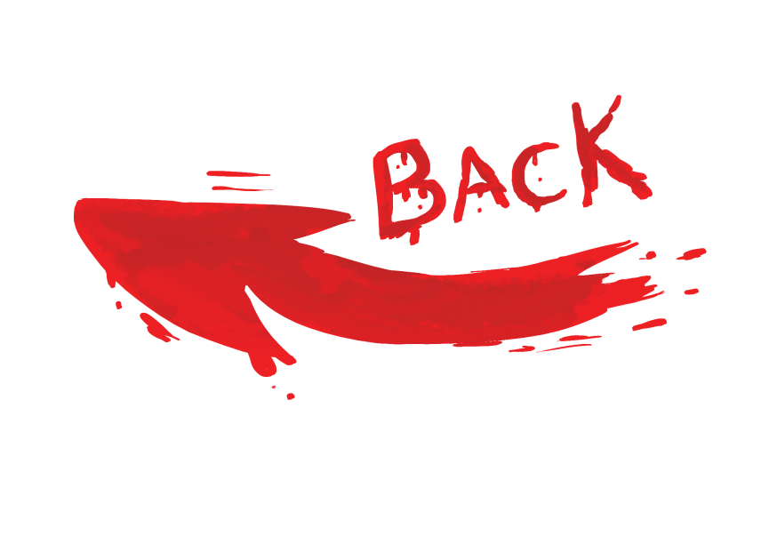
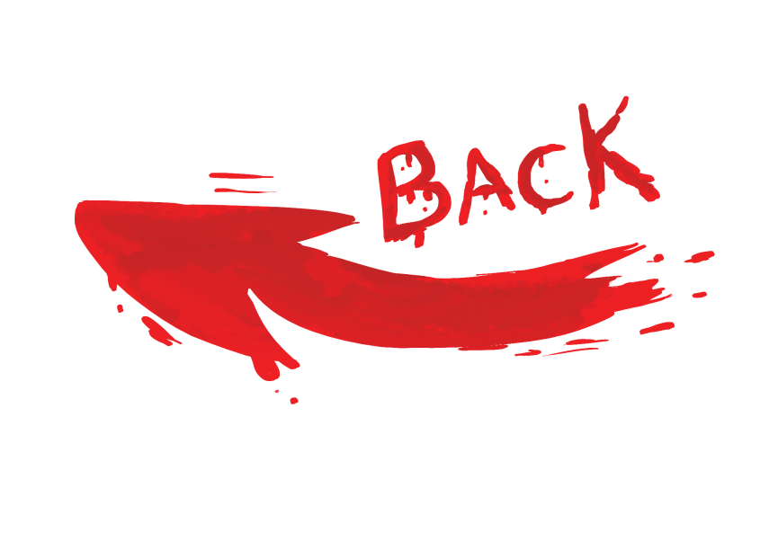

Luis Alfredo Garavito Cubillos (born 25 January 1957), also known as La Bestia ("The Beast") is a Colombian serial killer, pederast, sadist, rapist, child molester, and necrophile. In October 1999, he admitted to committing the rape, torture, mutilation and murder of 147 minors, predominately young boys and teenagers. His victims, based on the locations of skeletons listed on maps that Garavito drew in prison, could possibly exceed 400; Garavito continues to confess to more murders. He has been described by local media as "the world's worst serial killer". The judicial body ruled that all Garavito's sentences total 1,853 years and 9 days in jail. Currently, Garavito is confirmed to have murdered at least 189 people in total.
south America:
95260 people
Brazil: 57358 people
Venezuela: 16506 people
Colombia: 12656 people
Peru: 2803 people
Argentina: 2291 people
 
